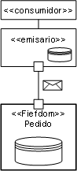

| Directriz: Encapsulación de datos de servicio |
 |
|
| Elementos relacionados |
|---|
IntroducciónUna práctica común en el desarrollo orientado a objetos y en el basado en componentes ha sido tener un conjunto de componentes que represente las entidades continuas que residen en una base de datos compartida. De hecho, en muchas organizaciones de TI ha sido frecuente una visión que consistía en tener un único esquema de base de datos que contenga todos los elementos continuos utilizados en la empresa. Aunque esta práctica haya tenido un éxito limitado en algunas organizaciones, para muchas de ellas, el esquema de empresa común no se ha desarrollado. Existen muchas razones por las que falla tal enfoque, muchas de ellas no técnicas, pero relacionadas con varias aplicaciones; el acceso, el bloqueo y el cambio de los mismos datos compartidos son problemas muy difíciles de resolver en los límites organizativos. En esta directriz, trataremos dos problemas que están muy relacionados: la noción de que un servicio debería ser una encapsulación completa de los datos que requiere y de que el único compartimiento de información entre servicios debería llevarse a cabo a través del intercambio de mensajes. Esta directriz proporciona información detallada adicional al tema de la identificación de servicios dirigidos por datos. Servicios como feudosUno de los términos más utilizados al describir la noción de desarrollo orientado a objetos es la noción de encapsulación, es decir, que un objeto debería encapsular su estado (datos privados) y su lógica de implementación. En un mundo de servicios, debemos separar claramente la noción de Artefacto: Servicio (implementación) de su Artefacto: Especificación de servicio. Esta sección tratará la necesidad de encapsular el estado. Este concepto se ha documentado, inicialmente en [HELLAND] y más recientemente en [SESSIONS], y se centró en el desarrollo de sistemas autónomos y, por lo tanto, más fácilmente desarrollables.  La analogía normalmente utilizada [HELLAND] es que en la solicitud de nuevos seguros tendemos a utilizar un agente. El agente es responsable de ayudarle a rellenar los formularios de solicitud y normalmente lo hace con acceso a los datos de los tipos de política y tarifas. El agente de seguridad actúa como emisario en nombre del feudo de la compañía de seguros. De hecho, la compañía de seguros sólo puede aceptar las aplicaciones de políticas de un agente aprobado. El feudo es responsable de distribuir información actualizada sobre políticas, tarifas y formularios a los agentes, así como del proceso de aplicaciones. No obstante, aunque el feudo haya suministrado la información de política al agente y el agente haya sido certificado por el feudo, la primera cosa que hace la compañía de seguros con la aplicación es validarla completamente (el feudo sigue sin confiar en el emisario). Las siguientes secciones describen el rol de los dos elementos primarios con más detalle. Aunque esto no se presenta como un patrón concreto o un enfoque prescriptivo, los principios incluidos son importantes a la hora de considerar las soluciones orientadas a servicios. Rol del feudoEl feudo es un servicio autónomo; sólo permite la comunicación a través de mensajes que normalmente se presuponen creados por emisarios que actúan en nombre del cliente. El feudo es seguro, autónomo y define completamente un límite de los datos. Ningún origen de datos ni otros datos continuos se comparten entre feudos o entre feudos y otros elementos de software. Ahora, es posible que un solo servidor de base de datos pueda sostener más de un servicio de forma continua, pero distintos espacios de tabla o contenedores de bases de datos para cada feudo garantizan la integridad de los datos, la seguridad, etc. Otro aspecto clave del patrón es que garantice que el emisario puede actuar como agente razonable, que pueda interactuar con el cliente con el mínimo de comunicación necesario con el feudo, y que el feudo distribuya copias de determinados datos de referencia a los emisarios para que los almacenen y utilicen localmente. Así que en el ejemplo de seguro anterior, el catálogo de políticas disponibles, sus requisitos, restricciones y precios se distribuye de forma periódica a los agentes. Por supuesto, es importante que el agente pueda utilizar esta información, pero también que entiendan que esta información es una copia de los datos y no necesariamente los datos que el feudo utiliza, y que la información puede estar desactualizada. Se puede actualizar una vez al mes y si la actualización se recibe, el emisario quizás no pueda procesar nuevas aplicaciones o tenga que procesarlas según los datos antiguos. Tal como comentamos anteriormente, el hecho de que un emisario actúe en nombre de un feudo no implica ninguna forma de relación de confianza entre las dos partes. Para garantizar que no se ha usurpado el emisario, todos los mensajes serán validados en su sintaxis, semántica y política antes de ser aceptados. Las responsabilidades detalladas del feudo son las siguientes:
Rol del emisarioEl emisario actúa como agente y se puede ubicar como componente por cliente, componente basado en Internet, o componente desarrollado específicamente, pero fundamentalmente tiene la característica de gestionar los datos de referencia necesarios para rellenar los mensajes enviados a los procesos de feudo. También es responsable de gestionar copias locales de mensajes por transacción. Así que, por ejemplo, los clientes pueden identificar si tienen una política existente; esto puede buscarlo el emisario, primero para prerrellenar el formulario con alguna información, y esta copia de la política existente puede ser ocultada por el emisario durante la transacción de finalización de la aplicación. En general, se utiliza un emisario cuando la comunicación entre feudo y cliente representa alguna transacción más compleja que el emisario no puede ahora gestionar de forma más eficaz como, por ejemplo, rellenar solicitudes más complejas, como en el ejemplo actual. Este patrón se puede ver en muchas organizaciones de hoy en día en las que el sistema para rellenar pedidos que procesa pedidos y planifica su entrega es a menudo el mismo sistema que ha estado presente durante muchos años. Como estas organizaciones han empezado a vender productos interactivamente a través de Internet, la aplicación web actúa como un emisario que tiene una copia local del catálogo de productos y ayuda al cliente a preparar un pedido. Por supuesto, no es la aplicación web la que procesa el pedido; envía los pedidos al sistema existente. Como el emisario completa este pedido según los datos de referencia, es responsable de esperar que el pedido no sea rechazado debido a que no es correcto. Por otro lado, tal como afirmábamos anteriormente, el sistema de pedidos existente va a validar el pedido antes de aceptarlo. Las responsabilidades detalladas del emisario son las siguientes:
Límites de datos de servicioEn general, muchas aplicaciones se desarrollan como conjuntos integrados verticalmente de los componentes (véase el concepto Arquitectura orientada a servicios para obtener más información). Esto conduce a aplicaciones que tienen pocos puntos de integración naturales. El enfoque más común para la integración, fundamentalmente debido a que parece fácil, es tener dos o más aplicaciones compartiendo un almacén de datos común. De esta forma, si Inventario y Pedidos comparten la noción de un "producto", accederán a las mismas tablas de la base de datos. Esto lleva a cierto número potencial de problemas de rendimiento y concurrencia e interrelaciones que ahora asocian estas aplicaciones que afectan a su evolución individual y a la posibilidad de que la empresa vuelva a alojar, desarrollar o simplemente cambiar una de las aplicaciones.
Para el desarrollo de soluciones orientadas a servicios, recomendamos que un servicio gestione un modelo de datos limitado y coherente específico. De esta forma, los analistas del uso de las dos aplicaciones mostradas anteriormente deberían identificar el uso de los datos mediante ellas, así como la forma en que se puede separar para que lo gestionen dos servicios autónomos. Esto no quiere decir que no haya interconexiones entre los modelos de datos cuando estén separados. Por ejemplo, los servicios Inventario y Pedidos necesitarán una definición común de productos y también ubicaciones en las que el inventario se almacene y de donde procedan los pedidos. Los enfoques para tratar este tema son crear un tercer servicio para el concepto compartido (aquí, un servicio de catálogo de productos sería relevante) o gestionar el concepto en sólo uno de los nuevos servicios. Por ejemplo, la ubicación sería gestionada lógicamente por Inventario. Ahora, los mensajes enviados hacia y desde estos servicios deberán contener el identificador para que los elementos compartidos sean consultados o recuperados en caso necesario. Por ejemplo, en el caso del inventario, una consulta de los productos actualmente gestionados por una ubicación devolverían una lista de identificadores de productos (y uno presupone cantidades en mano); si los detalles de los productos son necesarios, estos se recuperarían desde el servicio de catálogo de productos. Obviamente, un producto de trabajo clave en el análisis de los límites de datos es el Modelo de datos. Los modelos de datos deben crearse para la base de datos existente y separarse con cuidado en el modelo de datos físico o preferiblemente en el modelo de datos lógico. Mensajes de servicio como vistas de datosSi todos los datos sólo se almacenan dentro del servicio y se niega el acceso a todo lo externo al servicio, toda la comunicación deberá pasar a través de mensajes identificados en la especificación de servicio. No obstante, siempre es importante observar que estos mensajes, como representan una consulta y devolución de datos de la base de datos al cliente, son específicamente copias de los datos contenidos por el servicio. De esta forma, pueden representar realmente el estado obsoleto del servicio. Por ejemplo, consultando la cantidad a mano del producto "234," se devuelve un mensaje que identifica que la ubicación "562" tiene una cantidad de "12". Sin embargo, la operación fallará si otro cliente toma ocho elementos del almacén y el cliente original intenta adquirir 12 elementos. Se trata, en efecto, de problemas de diseño y gestión de transacciones tradicional; la gestión del ámbito y los límites de las transacciones realizadas de manera un poco más compleja o, al menos, más visiblemente debido a la naturaleza débilmente conectada de los servicios y los clientes de servicio. Por tanto, los mensajes no sólo deben tenerse en cuenta como vistas de los datos sino también como copias de ellos. Se han escrito algunas instrucciones en un número de lugares, incluida la SOA, para relacionar cómo pueden los mensajes identificar específicamente su tiempo de vida y aplicabilidad. Otro afecto de esta transformación al enfoque basado en mensajes inherente a soluciones orientadas a servicios es que ahora podemos volver a centrarnos en la idea de un modelo de datos común para aplicaciones de un modelo de mensaje común para la integración. Esto significa que, siempre que sea posible, los mensajes definidos para especificaciones de servicio se basan en estructuras comunes, posiblemente separadas en un esquema unido que se puede utilizar en los servicios. Se trata de un enfoque mucho más flexible para la integración ya que también coincide con el enfoque de acoplamiento débil de los propios servicios. Igualmente, la mayoría de las tecnologías utilizadas en la implementación de servicios incluyen tecnologías, herramientas y tiempos de ejecución que ofrecen funciones de transformación de mensajes en las que el esquema de mensaje no coincide exactamente. Para obtener más información, en concreto sobre usufructo y almacenamiento en caché de mensajes, consulte la Tarea: Diseño de mensajes. Referencias[HELLAND] Fiefdoms and Emissaries, Pat Helland, Microsoft. [SESSIONS] Software Fortresses: Modeling Enterprise Architectures, Roger Sessions, Addison Wesley, 2003. |

© Copyright IBM Corp. 1987, 2006. Reservados todos los derechos. |